Connecting to an Azure hosted SQL instance using Azure AD authentication is a simple process, whether the Mule application is hosted in CloudHub or on-premise.
In this codelab, you will build a simple application that connects to an Azure hosted SQL instance using Azure AD for authentication. Given that you will need your own instance for this, I will simply be demonstrating how to establish connectivity.
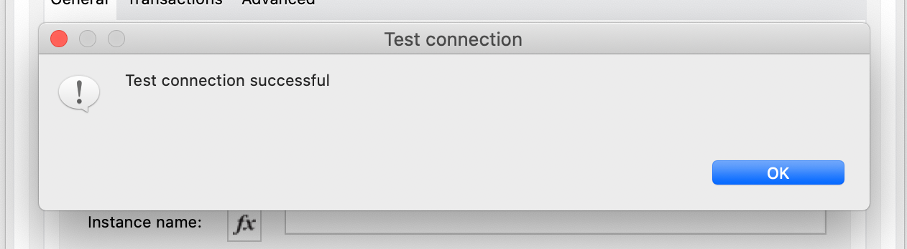
Open Anypoint Studio (recommended version 7.8+) and create a new Mule Project. I would also recommend creating a new workspace for workshops. Set the project name to something meaningful, eg: azure-sql-using-azure-ad-walkthrough
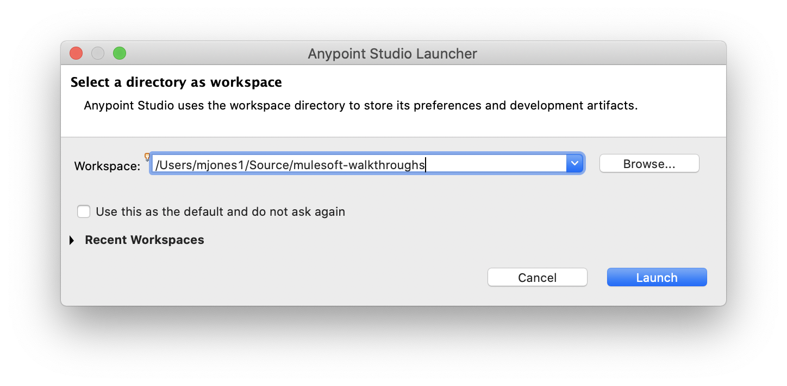
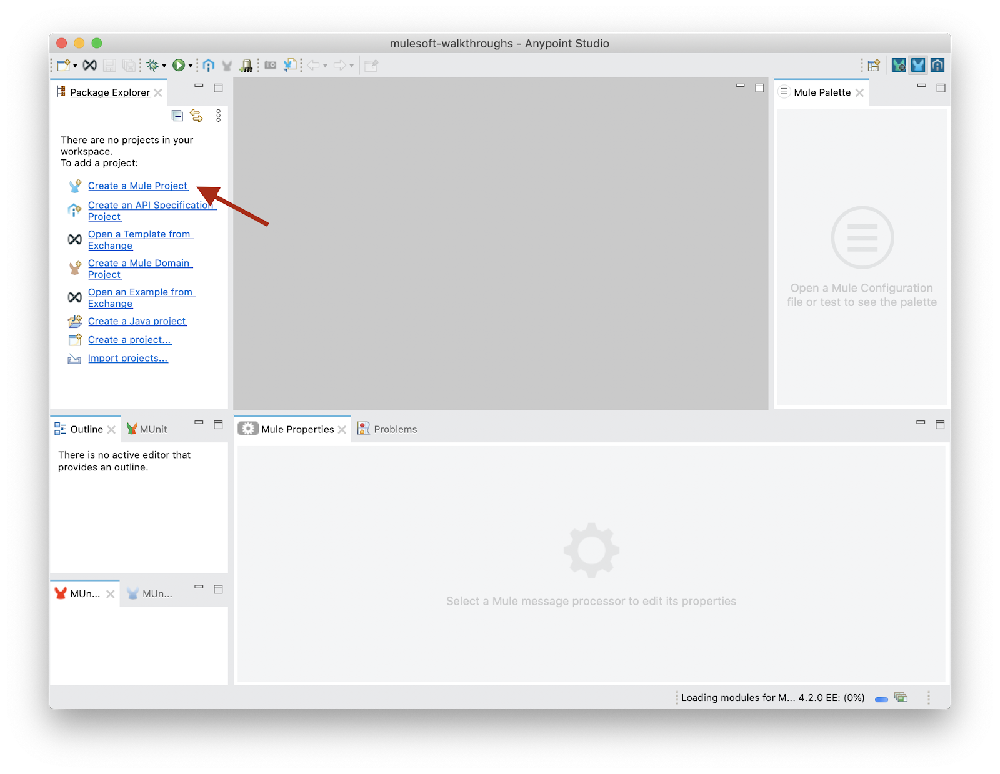
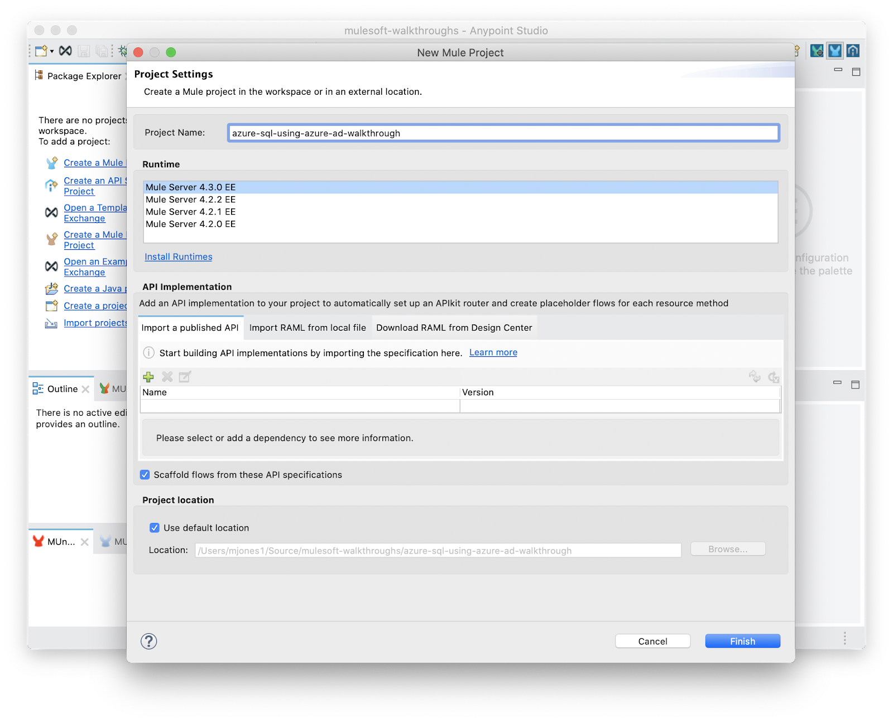
Click Search in Exchange in the Mule Palette (note: while we could use the favorites, using Search in Exchange option ensures we pull the latest version of the connector)
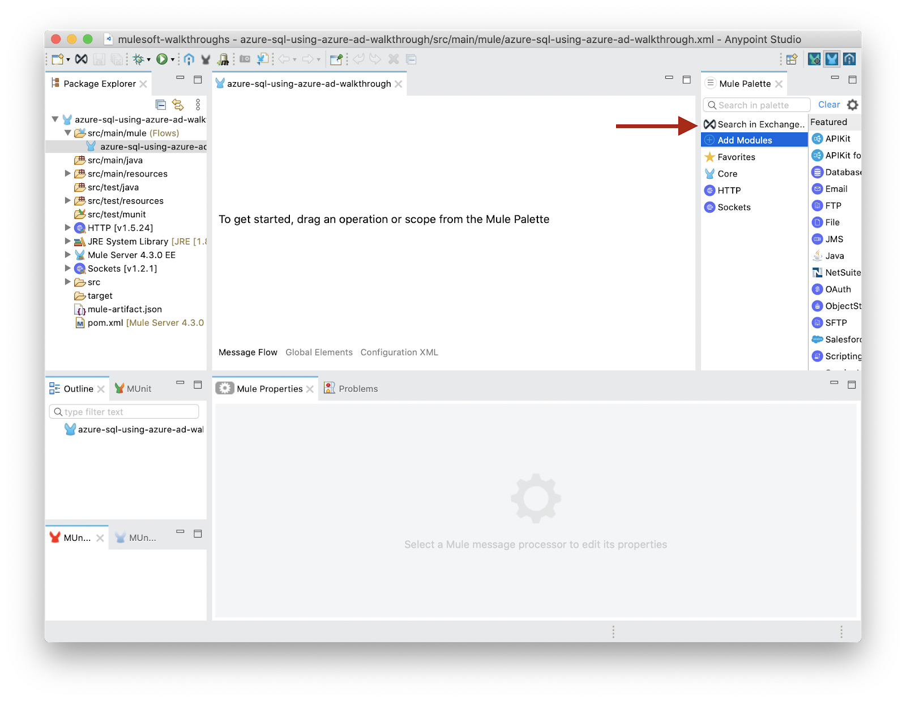
In the new window, search for the latest database connector and add it to your project.
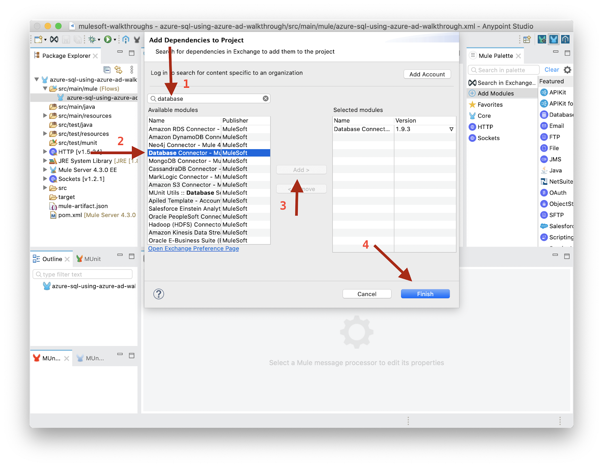
Open your POM.xml:
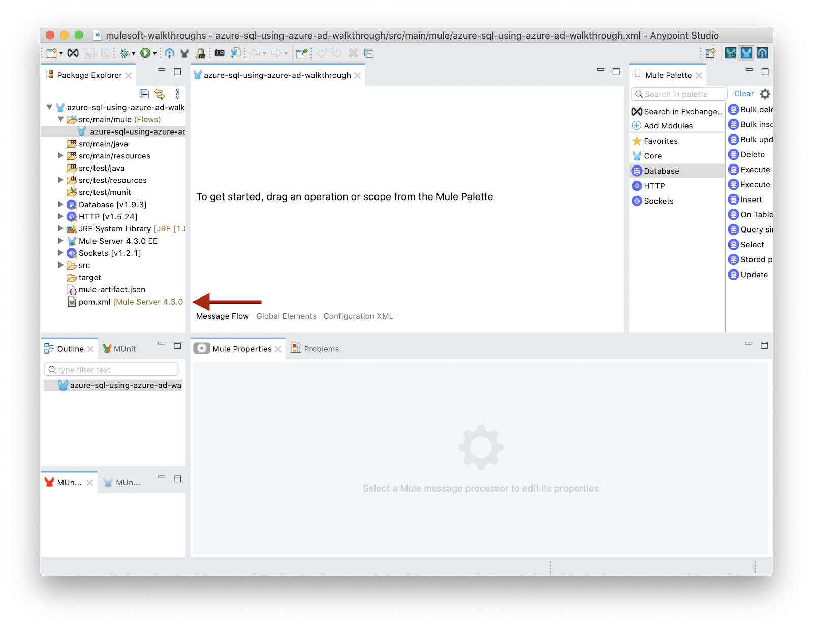
Add these two dependencies; one is the Microsoft SQL JDBC driver and the other provides Azure AD authentication.
pom.xml
<dependencies>
.
.
.
<dependency>
<groupId>com.microsoft.sqlserver</groupId>
<artifactId>mssql-jdbc</artifactId>
<version>9.2.1.jre8</version>
</dependency>
<dependency>
<groupId>com.microsoft.azure</groupId>
<artifactId>msal4j</artifactId>
<version>1.9.1</version>
</dependency>
</dependencies>In order for the application to access the drivers, the library needs to be set to shared. For more information about why this is necessary, see this documentation: https://docs.mulesoft.com/mule-runtime/4.3/about-classloading-isolation
pom.xml
<build>
<plugins>
<plugin>
<groupId>org.apache.maven.plugins</groupId>
<artifactId>maven-clean-plugin</artifactId>
<version>3.0.0</version>
</plugin>
<plugin>
<groupId>org.mule.tools.maven</groupId>
<artifactId>mule-maven-plugin</artifactId>
<version>${mule.maven.plugin.version}</version>
<extensions>true</extensions>
<configuration>
<sharedLibraries>
<sharedLibrary>
<groupId>com.microsoft.sqlserver</groupId>
<artifactId>mssql-jdbc</artifactId>
</sharedLibrary>
<sharedLibrary>
<groupId>com.microsoft.azure</groupId>
<artifactId>msal4j</artifactId>
</sharedLibrary>
</sharedLibraries>
</configuration>
</plugin>
</plugins>
</build>hostNameInCertificate: While this is typically *.database.windows.net, this will be different when dealing with other resources, such as Azure SynapsehostusernamepassworddatabaseNameportGo to the Global Elements tab (recommend a separate Mule Configuration file for global elements)
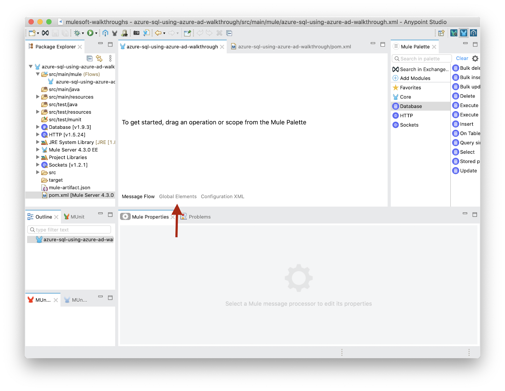
Click create
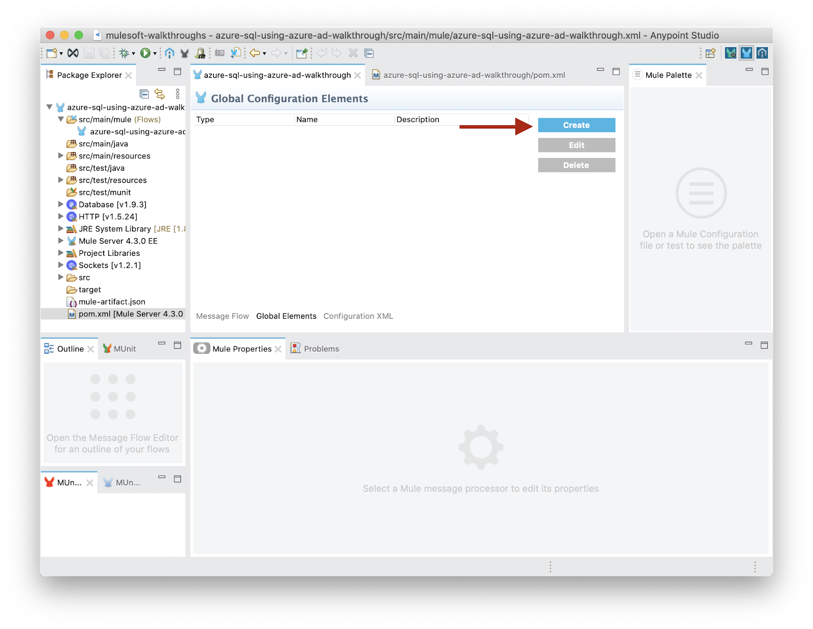
Find the database connector and click "OK"
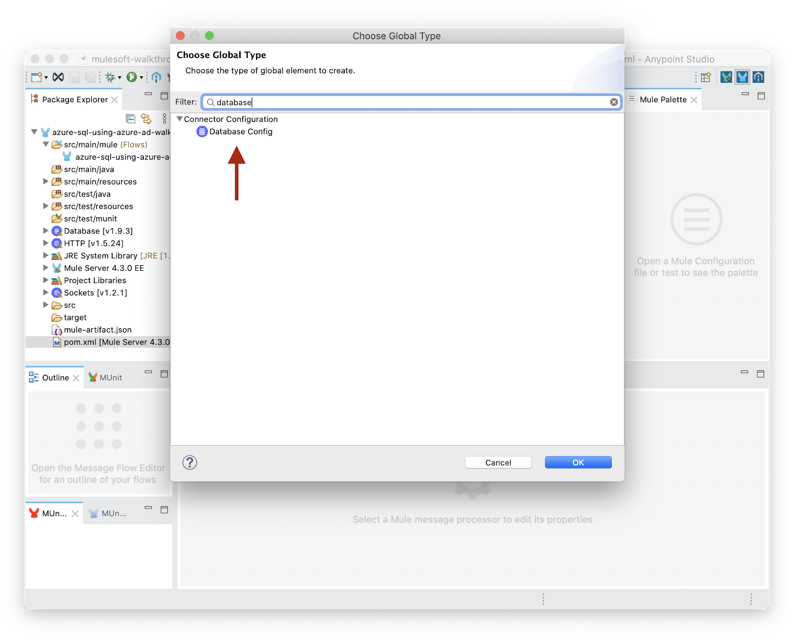
Change the database type dropdown to Microsoft SQL Server Connection. The driver should auto-populate as we've already added the dependency.
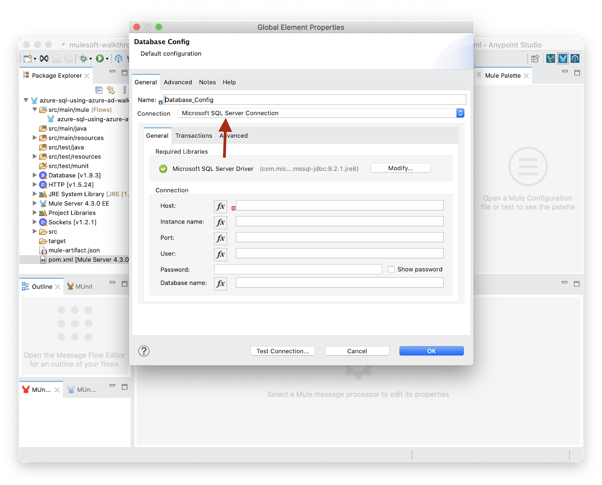
Add the standard database connection information.
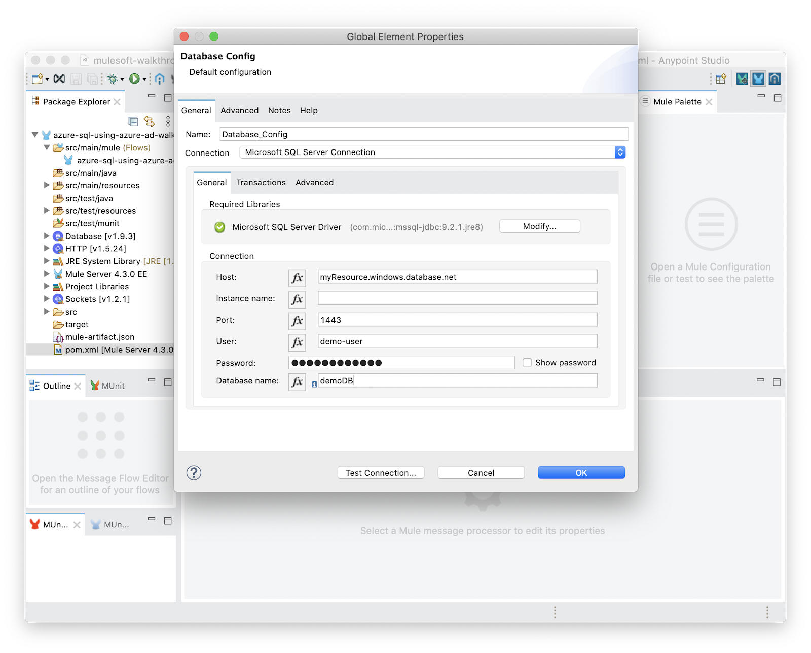
And now for the magic; move to the Advanced tab and add the following inline connection properties:
encrypt = truetrustServerCertificate = falsehostNameInCertificate = *.database.windows.netauthentication = ActiveDirectoryPassword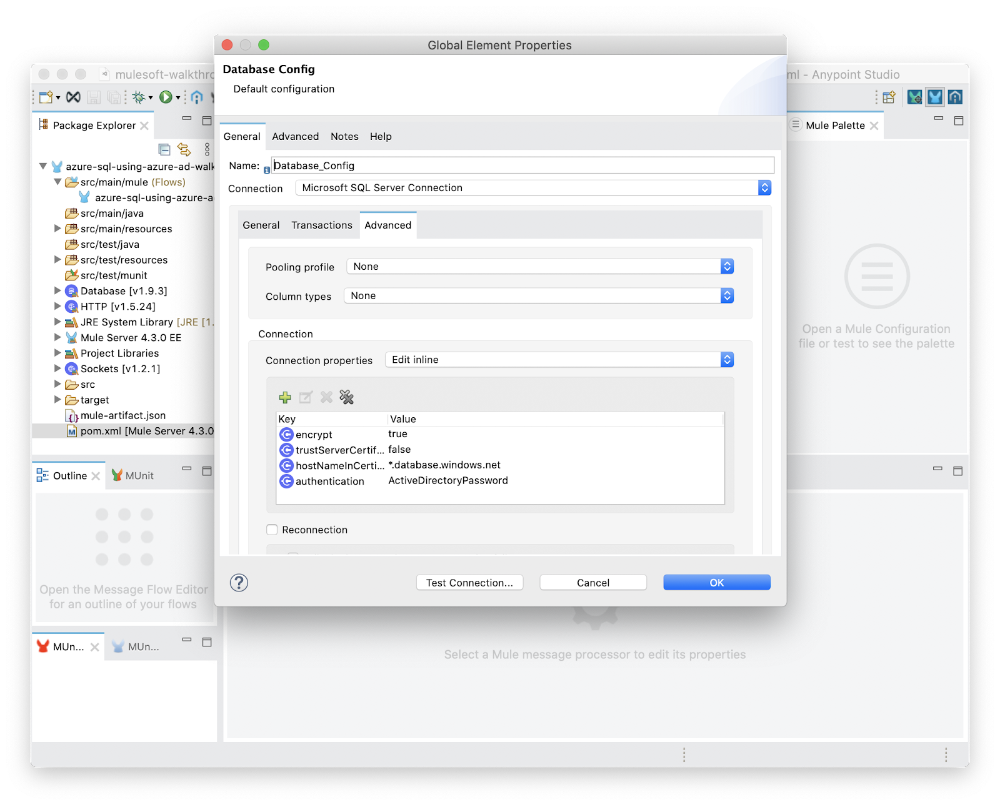
And finally click Test Connection